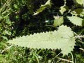

Nettles - see:
annual nettle
Urtica urens
perennial nettle
Urtica dioica
tree nettle
Urtica ferox

CALVE
Home
Pharmacology
admin sem 1
Exams
Work groups info
admin sem 2
Toxicology
Poisonous plants
Common names
Latin names
Plant toxins
Glossary
Lectures
Study guide
Basics
Pharmacokinetics
Autonomic system
CNS
Cardiovascular system
Inflammation and Hormones
Antibiotics
Skin
Law
Lectures
Semester 1
Smester 2
Nurses
Formulary
Cases
Plants home
common names
Latin names
Plant toxins
Glossary
Toxicology home
top